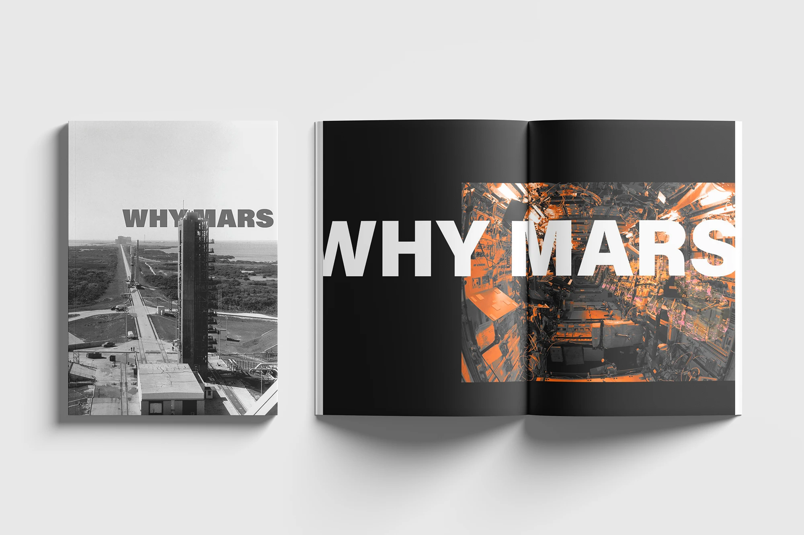
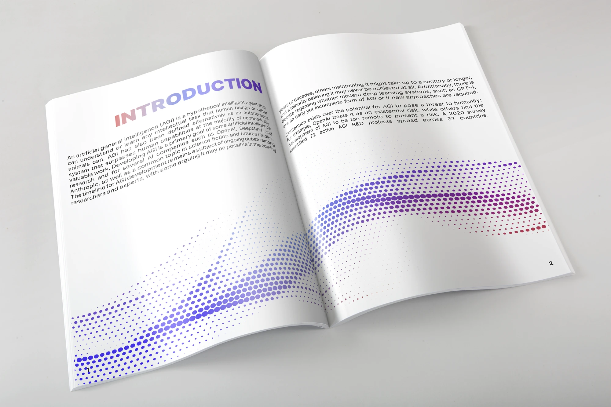
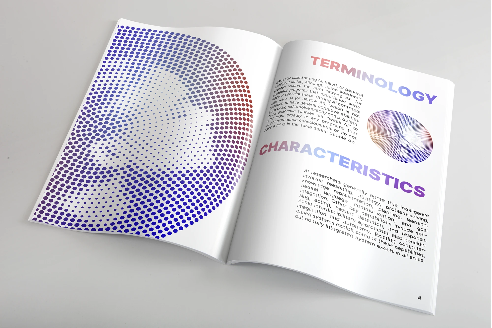
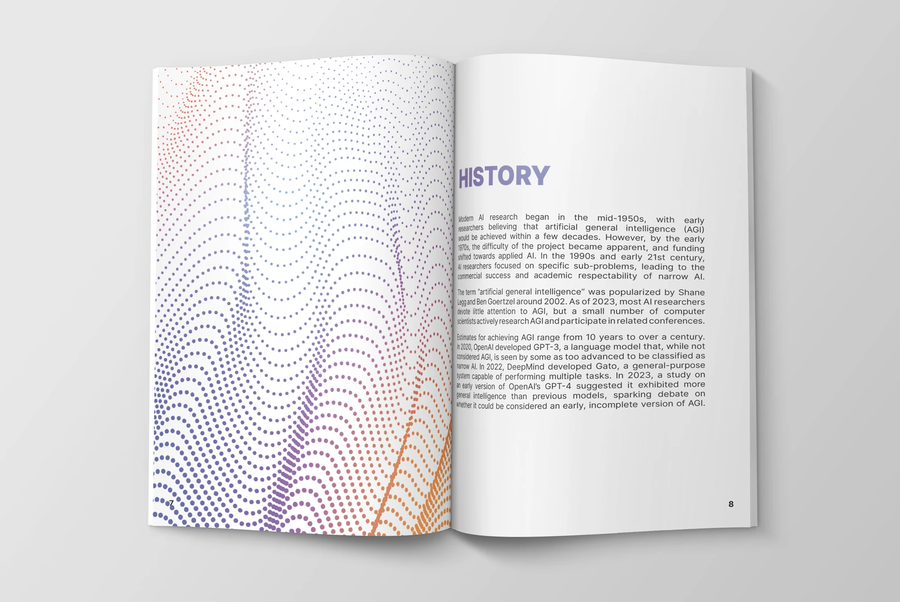

Editorial design / Two features
Magazine Spreads
Two long-form features laid out as magazine spreads: Why Mars, a photo-led essay on leaving Earth, and a type-led feature on artificial general intelligence.

Why Mars
Opening spreadFull-bleed photography · condensed display type
Why Mars
Four spreads · photo-led
The opening spread runs a full-bleed photograph under a condensed headline, and the following pages alternate between black-and-white archival imagery and the rust-coloured surface of the planet, so the palette shifts from Earth to Mars as you read.
Body copy is kept to narrow columns with generous margins, leaving the photography room to breathe, and pull quotes are set in the same condensed face as the title to hold the spreads together.


Artificial General Intelligence
Five spreads · type-led
A halftone gradient built from dots runs across the spreads, shifting from red to blue, and the section headings, Introduction, History, Terminology and Characteristics, are set large in the same gradient so each turn of the page has a landmark.
The columns stay narrow and the measure short, which keeps a dense subject readable and leaves the dot field to carry the mood.







Next project
Beak and Comb